背景: 圆圈3岁1个月
地点：珠海圆明新园+珠海歌剧院
人物：圆圈，圆圈爸和圆圈妈，圆圈大大姨一家
点击蓝字
关注我们
文|圈圈妈 部分图片来自网络
1
1
1
这个计划是临时决定的，有点仓促。
原计划澳门一日游，准备出发才发现圆圈爸的签证还没办好。（此处省略一万字的无语…）
也罢，珠海这个海滨城市也是个旅游胜地，这是圆圈兄弟和圆圈爸第一次去珠海。
圆圈说珠海是一个美人鱼的城市，因为可以看鱼！
晚上做攻略的时候，机缘巧合下了解到孖仔帮孕期群一宝妈正好在珠海，在她的推荐下确定了出游行程：上午圆明新园，下午珠海歌剧院。
简单介绍下圆明新园：
圆明新园以北京圆明园焚烧前的建筑为原稿，选择圆明园40景中的18个景点，按1:1的比例仿制建造。
看网友的照片感觉皇家园林气势恢弘，可是去到现场，发现差距很大，我们一行人进入园区之后就有种上当受骗的感觉，活脱脱的“照骗”啊！
公园管理比较混乱，杂草丛生，好像没人维护似的，部分地方积水污垢都没人清理。游客普遍素质不高，随处都是垃圾。
商业气息很浓厚，两边狭窄的步行道都摆满了各种小工艺品，都是义乌那些地摊货没啥特色，与圆明新园古色古香的古典传统主题很不搭，显得非常突兀另类。
有小贩看我牵着两个孩子，给我推荐小海螺，5块钱买一送一，凭多年的采购经验，这破东西来货价才几毛钱。
总结，圆明新园号称4A级风景区，真有点浪得虚名。
唯一让圆圈觉得有点意思的是观光小火车，30元一张成人票。
可是很坑！很不值！
晃了不到五分钟，小火车就停下来被司机赶下车去看皇帝的后宫。去后宫一看，到处残垣破壁，名副其实的冷宫。
你猜我在皇帝的后宫看到什么了，友唱全名K歌。原来皇帝和他的三千佳丽都跑后宫唱KTV 了啊？
这要是放抖音，肯定很火！因为太奇葩了！
在后宫附近一整片都是小孩子玩的娱乐设施，梦幻水城，眼镜王蛇滑道…
我们被圆明新园深深伤害到了，已经没兴致走下去了，在圆圈的拉扯下，很不情愿进去梦幻水城看别人玩水。
圆圈兄弟对水的恐惧可能是从了我的基因，有贼心没贼胆，看别人玩比当事人还要玩得开心…
我们从梦幻水城出来，绕着湖边走了一圈，又回到了小火车的起点站。
为了表示我们确实去过圆明新园，我们进入了皇家建筑群，当作到此一游吧！
第一进殿为圆明园，陈设了清朝八旗兵制及装备；
第二进殿是奉三无私殿，这里展示了慈禧第一次垂帘听政的场景及帝后寝宫的陈设；
最后是九洲清晏殿，在这里你可以看到皇太子读书的御书房和皇帝用膳时的情景。
穿过皇家建筑群又回到平湖秋月那个湖，我没有去过杭州西湖，但是去过我们的惠州西湖（圆圈妈的老家）
这个平湖秋月应该识趣点排第三吧！
圆圈想坐游船，像脱缰的野马不受控制，拼命往湖边上跑，我和圆圈爸四处散开去抓这两只小崽子。
游客越来越多，被圆圈兄弟这样一折腾，更加没有心思闲逛了，提前打道回府。
我们走出园区有点落荒而逃的感觉，白白浪费一个上午的时间。
一个半小时，停车费居然要20元。
1
2
1
驱车来到珠海博物馆对面的海怡酒家解决了我们的午餐。
不到长城非好汉，去珠海不吃海鲜，算白来。在圆明新园玩的不够尽兴，在海怡酒家吃得很完美…
濑尿虾，海参，鲍鱼和鱼胶…差点又横着出去了。
吃完中饭，驱车前往珠海歌剧院，号称珠海的新地标。
从车窗户远远看去，两栋建筑物好像两个贝壳，一大一小，难怪叫日月贝，再仔细看，有点悉尼歌剧院的错觉哦。
圆圈想看美人鱼（珠海渔女）可是我们走错路了，我们以为珠海渔女在歌剧院附近，其实是在对面，隔海相望啊。
为了安抚下圆圈幼小的心灵，我们租了两辆自行车，再配上善意的谎言：“我们骑单车去找美人鱼玩！”
于是，我们沿着野狸岛海滨公园的海岸线出发去找“美人鱼”咯！
这个野狸岛有点类似深圳湾和红树林，圆圈爸告诉我对面就是香港。
原谅我的地理常识比较匮乏，我起初以为歌剧院对面是澳门，查地图才知道，珠海距离香港原来那么近啊！
可是我们明明开车走陆地要经过广州，中山，整整耗了5个小时才到珠海。
此刻，我不得不感叹下地球真的是圆的！
这里的海水跟深圳湾一样不美，不清澈，也不够蓝还很浑浊。但看着无边无际的海岸线，偶尔一阵阵海风吹来，还是蛮享受的！
圆圈对海景兴趣不大，也许从小就去过海边的缘故，他们反而对这个庞大的自行车非常好奇。
这是景区那种家庭用亲子自行车，前座一个位置，后座三个位置，正好我们一家四口满座。
可是前座那个位置太抢手，无端躺着中枪了，圆圈哥俩都很想坐前座位置，据说那个是司机位置，很酷！
刚开始还能友好相处，约法三章轮流坐前座位置，返程的时候，游戏规则被圆圈爸猪一样的队友破坏了。只因为圆圈爸把他们同时挤在前座位置，无奈方向盘只有一个。
一山难养二虎，圈圈兄弟为了一个方向盘正式开打了，此处应该来一段小视频，让大家伙体验下当时的场面。
最后，哥哥圆圆败下阵，被他的大姨接去另外一辆自行车上独享方向盘。
忍不住透露下，这小case，圆圈妈每天要应付N次！应该说每一个双胎妈妈和爸爸每天都要应付N次！
温馨提示：自行车60元一个小时，相当于一分钟一块钱。押金100元一辆，退还自行车之后会返回押金。
我们去的时候正好是下午3点钟，阳光最毒辣的时候。如果不赶时间，可以先在海韵城逛街，来点下午茶，等4点半之后再出来就没那么晒了。
我们4点半把车退回给行车租赁处，往歌剧院方向走的时候，发现突然间多了很多游客，从几辆旅游大巴下来一些大妈大叔级别的旅行团在张罗着拍照。
此时的珠海歌剧院才是最美的时候吧！
可是我们却要返程深圳了，结束3天2夜的珠海游…
1
END
1
本文系圆圈妈sgguy-com原创，来源于孖仔帮，专注双胞胎孕期育儿经验分享，著作权归孖仔帮所有。
长按识别二维码关注我们
孖仔帮
与您分享双胞胎育儿路上的囧人囧事
近日发现有些平台未经允许转载了圆圈妈的文章，在此声明下：
若喜欢圆圈妈的文章，无条件欢迎大家分享转发到朋友圈，如需转载至公众号请联系圆圈妈（微信sgguy-com）授权，或扫以下微信二维码。
各位双胎妈妈，更多孖仔帮原创育儿文章请猛戳 "阅读原文" ，或者直接上圆圈妈的个人博客，大把双胎孕期育儿心得经验分享。
阅读原文：
https://www.sgguy.com/twinsbang
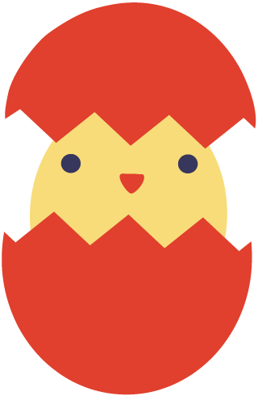
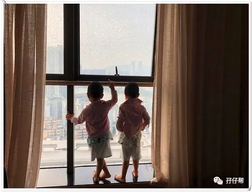
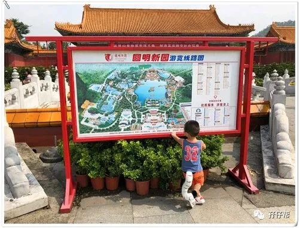
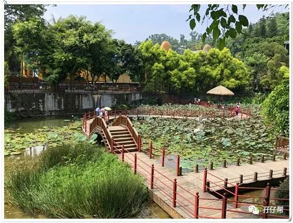
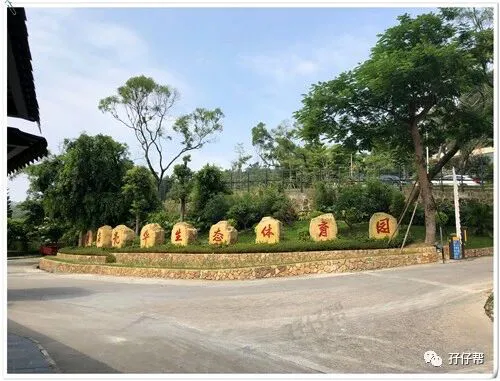
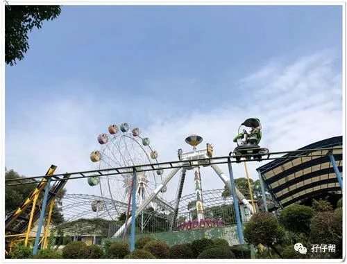
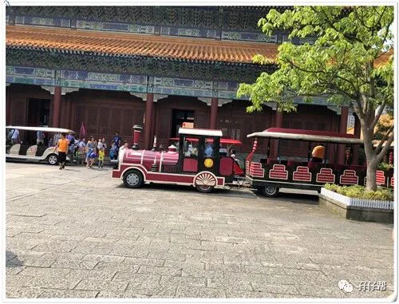
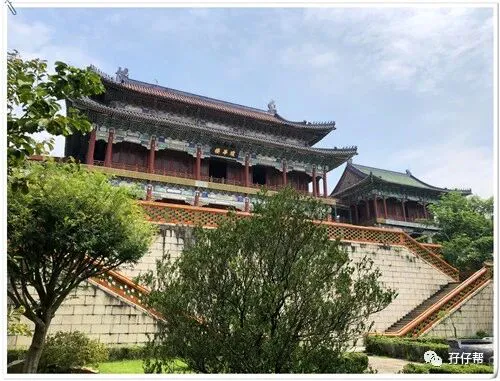
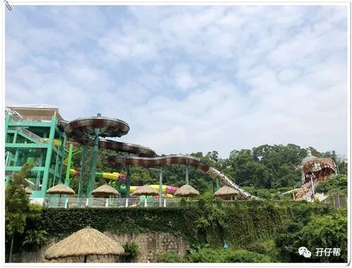
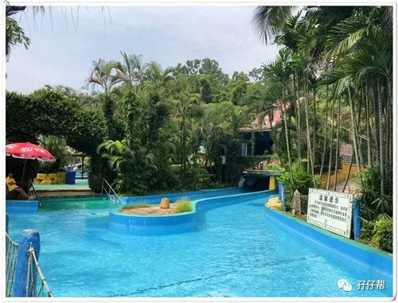
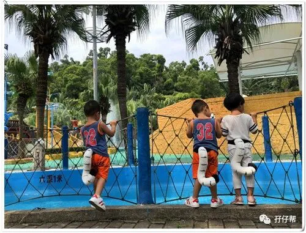
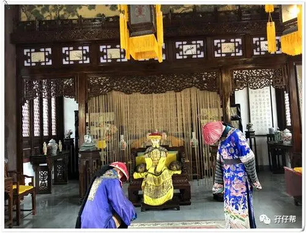
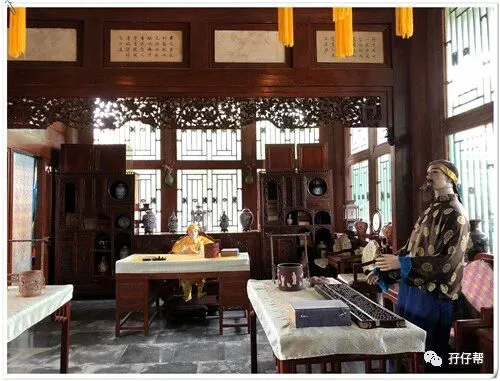
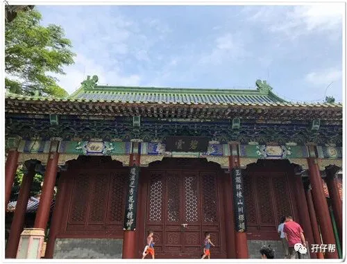
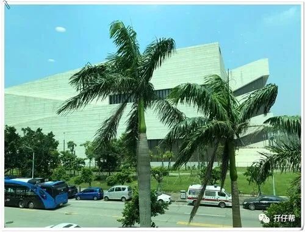
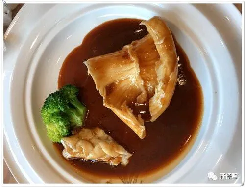
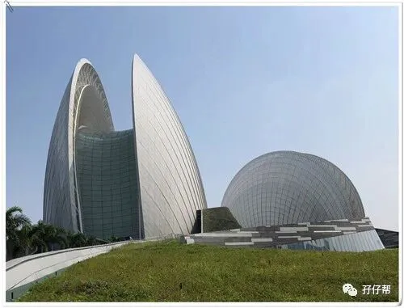
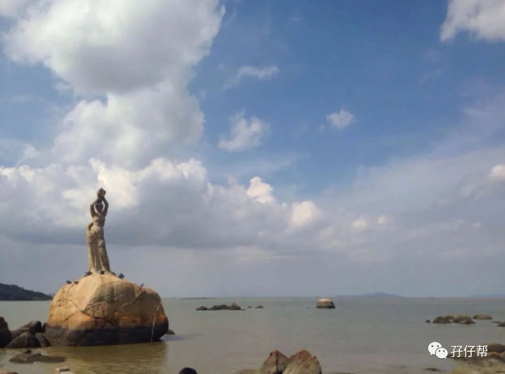
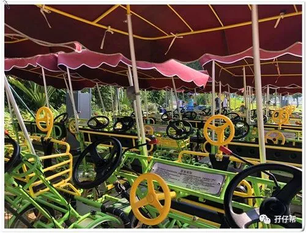
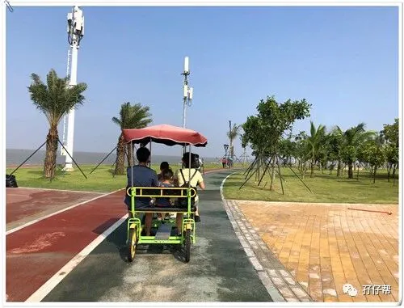
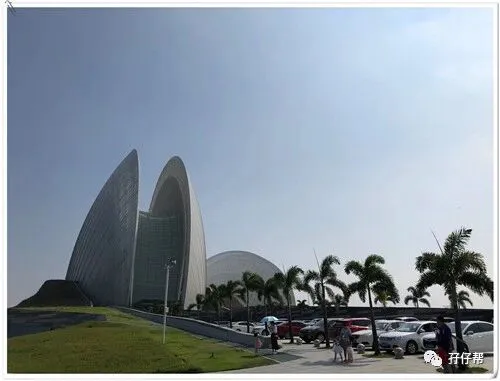
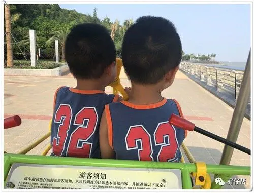
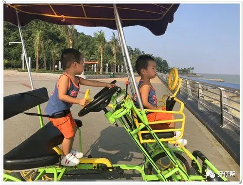
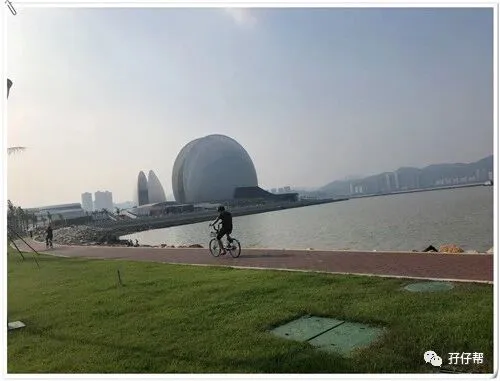